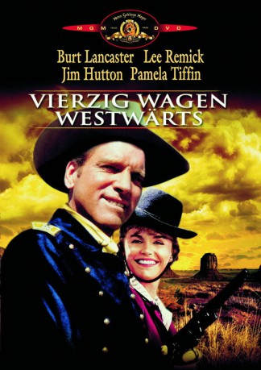
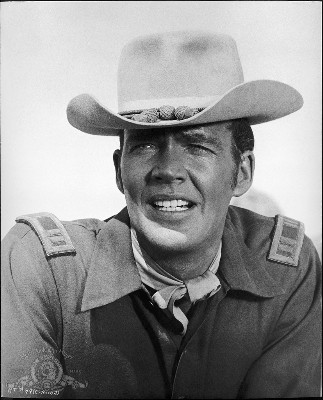

#3380 40 Wagen westwärts
Alternativ: The Hallelujah Trail
 
 IMDB-Wertung: 6.7 / 10
IMDB-Wertung: 6.7 / 10  Metascore: 0
Metascore: 0 
Denver ist von einer schrecklichen Dürre bedroht: Der Whisky wird knapp, und die 40 Wagen, die Nachschub bringen sollen, wecken allerlei Begehrlichkeiten. Durstige Minenarbeiter, wilde Indianer und eine noch wildere Horde feministischer Abstinenzlerinnen - alle sind hinter dem goldenen Nass her. Und die verzweifelte US-Kavallerie immer mitten drin.
Jahr: 1965
Dauer: 139 Minuten
FSK: 6
Land: USA Studio: United ArtistsTonspuren: DD2.0 - ,
Untertitel:
Auflösung: 1080p (1920x808) Größe: 5877 MB
Genre: Komödie, Western
Regisseur: John Sturges
Drehbuch: William Gulick, John Gay
Soundtrack: Elmer Bernstein
Darsteller:
 Burt Lancaster als Col. Thaddeus Gearhart
Burt Lancaster als Col. Thaddeus Gearhart Lee Remick als Cora Templeton Massingale
Lee Remick als Cora Templeton Massingale-  Jim Hutton als Capt. Paul Slater
 Donald Pleasence als 'Oracle' Jones
Donald Pleasence als 'Oracle' Jones Brian Keith als Frank Wallingham
Brian Keith als Frank Wallingham Martin Landau als Chief Walks-Stooped-Over
Martin Landau als Chief Walks-Stooped-Over John Anderson als Sgt. Buell
John Anderson als Sgt. Buell- Tom Stern als Kevin O'Flaherty
 Robert J. Wilke als Chief Five Barrels
Robert J. Wilke als Chief Five Barrels Dub Taylor als Clayton Howell
Dub Taylor als Clayton Howell Whit Bissell als Hobbs
Whit Bissell als Hobbs Val Avery als Denver bartender
Val Avery als Denver bartender Hope Summers als Mrs. Hasselrad
Hope Summers als Mrs. Hasselrad- Marshall Reed als Lt. Carter
 Bing Russell als Horner - Miner
Bing Russell als Horner - Miner John Dehner als Narrator , uncredited
John Dehner als Narrator , uncredited Eddie Little Sky als Crow Chief , uncredited
Eddie Little Sky als Crow Chief , uncredited- Pamela Tiffin als Louise Gearhart
 Helen Kleeb als Henrietta
Helen Kleeb als Henrietta- Noam Pitlik als Interpreter
 William 'Billy' Benedict als Simpson - Miner
William 'Billy' Benedict als Simpson - Miner Ted Markland als Bandmaster
Ted Markland als Bandmaster Larry Duran als Brother-in-law #1
Larry Duran als Brother-in-law #1- Jerry Gatlin als Brother-in-law #2
- Jim Burk als Elks-Runner
- John McKee als Rafe Pike
- Buff Brady als Bilkins - Miner
- Carl Pitti als Phillips
- Carroll Adams als Simmons , uncredited
- Oscar Blank als Miner , uncredited
- Bill Borzage als Miner , uncredited
- Danny Borzage als Miner , uncredited
- Russell Custer als Miner , uncredited
- Bobby Gilbert als Miner , uncredited
 Herman Hack als Miner , uncredited
Herman Hack als Miner , uncredited- Carol Henry als Sgt. Henry , uncredited
- Elaine Martone als Loretta , uncredited
 Mathew McCue als Miner , uncredited
Mathew McCue als Miner , uncredited- Karla Most als Mary Ann , uncredited
- Victor Romito als Miner , uncredited
- Rudy Sooter als Miner , uncredited
- Arthur Tovey als Miner , uncredited
- Bill Williams als Lt. Brady , uncredited
- Chalky Williams als Miner , uncredited
 Harry Wilson als Miner , uncredited
Harry Wilson als Miner , uncredited
Datei: X:\HD-Western-1960-1979\40 Wagen westwärts (1965, FSK6, 1920x808).mkv seit 30.03.2016
Festplatte: HD Eastern+Western
 Es gibt insgesamt 110 Filme in der Gruppe 'HD-Western-1960-1979'
Es gibt insgesamt 110 Filme in der Gruppe 'HD-Western-1960-1979'